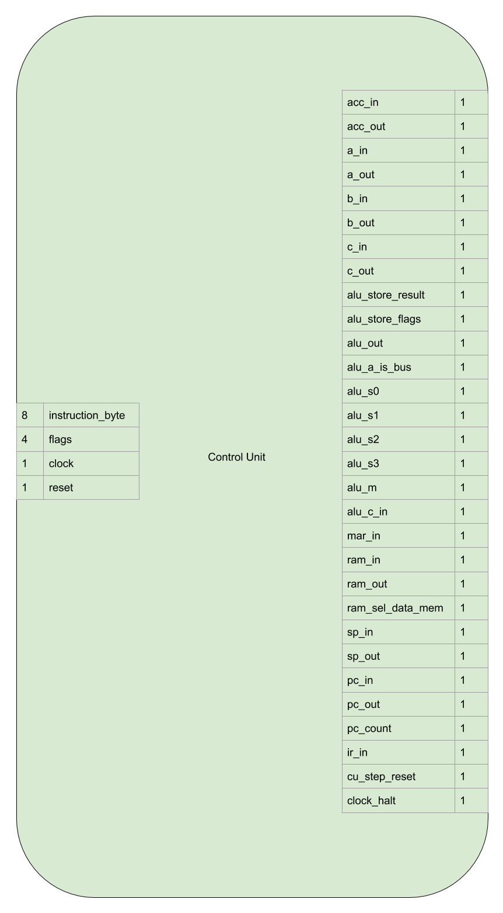
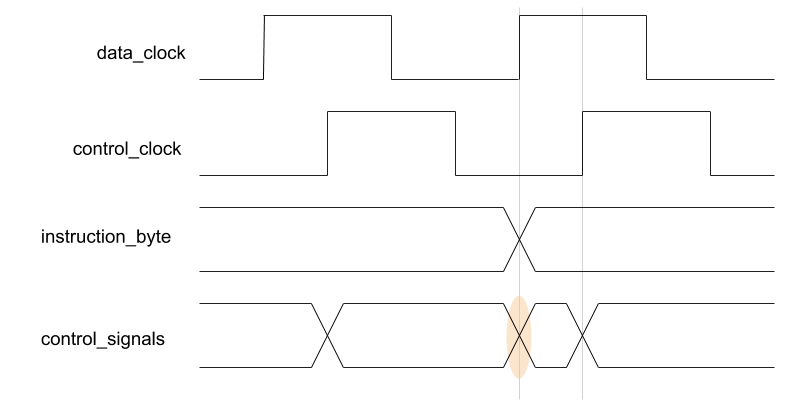

Control Unit¶
The control unit interprets the instruction byte and flag bits. It sets control signals in the correct sequence to operate the other modules in the computer to complete the current instruction. Steps in the sequence are kept in order with an internal microcode step counter.
Interface and Operation¶
This is the interface of the Control Unit:
This is how it operates:
| Name | Bit width | Description |
|---|---|---|
| instruction_byte | 8 | Specifies the current instruction. |
| flags | 4 | The flag bits from the ALU, control conditional instructions. |
| clock | 1 | The control_clock from the clock module. |
| reset | 1 | While high, sets the microcode step count to 0. |
| acc_in | 1 | Instructs the accumulator register to store the value on the bus. |
| acc_out | 1 | Instructs the accumulator register to assert it’s content onto the bus. |
| a_in | 1 | Instructs the A register to store the value on the bus. |
| a_out | 1 | Instructs the A register to assert it’s content onto the bus. |
| b_in | 1 | Instructs the B register to store the value on the bus. |
| b_out | 1 | Instructs the B register to assert it’s content onto the bus. |
| c_in | 1 | Instructs the C register to store the value on the bus. |
| c_out | 1 | Instructs the C register to assert it’s content onto the bus. |
| alu_store_result | 1 | Instructs the ALU to store the current result. |
| alu_store_flags | 1 | Instructs the ALU to store the current flags. |
| alu_out | 1 | Instructs the ALU register to assert it’s stored result onto the bus. |
| alu_a_is_bus | 1 | When low, the A input to the ALU is the accumulator register, when high, its the bus. |
| alu_s0 | 1 | The S0 input for selecting ALU operations. |
| alu_s1 | 1 | The S1 input for selecting ALU operations. |
| alu_s2 | 1 | The S2 input for selecting ALU operations. |
| alu_s3 | 1 | The S3 input for selecting ALU operations. |
| alu_m | 1 | The M input for the ALU. |
| alu_c_in | 1 | The carry in input for the ALU. |
| mar_in | 1 | Instructs the memory address register to store the value on the bus. |
| ram_in | 1 | Instructs the RAM to store the value on the bus. |
| ram_out | 1 | Instructs the RAM to assert it’s content onto the bus. |
| ram_sel_data_mem | 1 | When low, the RAM will operate on program memory, when high, data memory. |
| sp_in | 1 | Instructs the stack pointer to store the value on the bus. |
| sp_out | 1 | Instructs the stack pointer to assert it’s content onto the bus. |
| pc_in | 1 | Instructs the program counter to store the value on the bus. |
| pc_out | 1 | Instructs the program counter to assert it’s content onto the bus. |
| pc_count | 1 | Instructs the program counter to increment it’s value by one. |
| ir_in | 1 | Instructs the instruction register to store the value on the bus. |
| cu_step_reset | 1 | Resets the microcode step counter to 0. |
| clock_halt | 1 | Halts the clock module (and thus the entire computer). |
A single instruction needs multiple steps (data transfers between modules, or operations on data by a module) to complete. See the Micro Code section for more details.
Implementation¶
EEPROMs¶
The control signals to set are decided by a large combinatorial logic setup. The instruction byte, flag bits and microcode step bits form the input and the varying control signals are the output.
There are 4 EEPROM chips, they are all fed the same input as an address. Each EEPROM is programmed so that at the address corresponding to the input bits, 8 of the control signals are stored as data. Each EEPROM holds an 8 bit wide “slice” of the output control signals.
This is visible in the logic block diagram:

The EEPROMs are in a vertical line, all fed the same inputs and each EEPROM outputs it’s own slice.
Mirror Registers¶
As per the video by James Bates, mirror registers are used to store the instruction byte and flag bits on a rising control_clock. This is so that the control signals remain constant when the data_clock rises.
The instruction byte and flags bits partly determine the control signals, having the control signals change while the clock is rising could lead to unpredictable results.
The circled area below demonstrates the problem. The rising data clock and control signals change at almost same time. The EEPROM outputs settling and whatever propagation delay happens to have accumulated elsewhere in the computer affect the exact timing:
{kind=link}
With the mirror register we can control the time that the control signals change to be at a safe distance from the rising data_clock edge:

Microcode Steps¶
A 4 bit counter is used to keep track of the microcode steps in each instruction. There are a maximum of 8 steps in any one instruction so only 3 bits are used. The count is increased on each rising control_clock. The control unit can reset the count before the 8th step is reached to save executing “empty” micro cycles. This is achieved synchronously enabling the parallel load functionality of the 74HCT161. For more details about the microcode steps see the Micro Code section.
Hardware¶
The following electronics are used:
- A 74HCT377 is used for the mirror instruction register.
- A 74HCT173 is used for the mirror flag bits.
- A 74HCT04 is used to invert the incoming control signal that causes the counter to reset and the master reset signal.
- A 74HCT161 is used to provide the counting, loading, and resetting behaviour (much like the program counter).
- A 74HCT138 is used to convert the 3 bit binary number of the microcode step to an individual signal for each step (purely for aesthetic/blinky blinky reasons :))
- 4 x AT28C256 EEPROM chips are used to hold the combinational logic/microcode.
- LEDs and resistors are used to provide display of the data.
They are laid out as follows:
- Step counter, mirror flags and mirror instruction byte.
- Display of the above and microcode step format conversion.
- EEPROMs 2 and 3
- EEPROMs 0 and 1
- Control signal output and display.